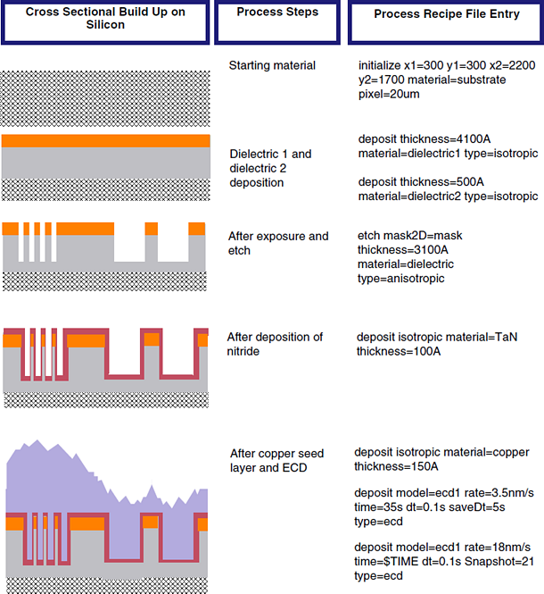
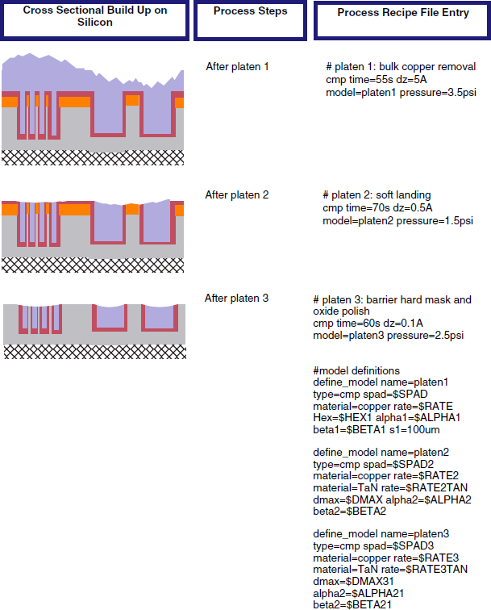

This example
uses a 2D mask and six measurement sites. There are three CMP models,
one for each platen. After the recipe is an illustration showing
how the keywords map to actual manufacturing steps.
#
# Process recipe file example with a 2D mask used to
# define the test chip with 6 sites. The test chip gds file and the
# measured data file are derived using the 2D mask definition.
#
initialize x1=300 y1=300 x2=2200 y2=1700 material=nitride
deposit thickness=4100A material=oxide type=isotropic
etch mask2D=mask thickness=3100A material=oxide type=anisotropic
deposit isotropic material=TaN thickness=100A
deposit isotropic material=copper thickness=150A
#
# initial layer stack:
# nitride at 0
# oxide at 4100A ==> trench bottom at 1000A
# TaN at 4200A
# Cu seed at 4350A
#
# Use different snapshot values to identify data after ECD platen 1
# platen2 and platen 3 (final result after first layer of metal)
#
# electroplating
deposit model=ecd1 rate=3.5nm/s time=35s dt=0.1s saveDt=5s type=ecd
deposit model=ecd1 rate=18nm/s time=$TIME dt=0.1s Snapshot=21 type=ecd
save dishing erosion z1 z2 z3 file=postECD
#
# bulk copper removal: platen1
cmp time=55s dz=5A model=cmp1 pressure=3.5psi Snapshot=22
save dishing erosion z1 z2 file=postP1
save state file=optimizedP1
#
# platen2: soft landing
initialize grid=optimizedP1
cmp time=70s dz=0.5A model=cmp2 pressure=1.5psi Snapshot=23 restart
save dishing erosion z1 z2 file=postP2
save state file=optimizedP2
#
# platen 3: barrier hard mask and oxide polish
initialize grid=optimizedP2
cmp time=60s dz=0.1A model=cmp3 pressure=2.5psi Snapshot=24
save dishing erosion thickness z1 z2 file=final
save state file=optimizedP3
#
#======= Model Definitions ==========
#
define_model name=ecd1 type=ecd k1=$K1 k2=$K2 k1s=$K1S k2s=$K2S \
phistar=$PHISTAR keq=$KEQ rmod=0 smod=0 LECD=$LECD
#
# platen 1
#
define_model name=cmp1 type=cmp spad=$SPAD material=copper rate=$RATE \
Hex=$HEX1 alpha1=$ALPHA1 beta1=$BETA1 s1=100um
#
# platen 2
#
define_model name=cmp2 type=cmp spad=$SPAD2 material=copper \
rate=$RATE2 material=TaN rate=$RATE2TAN dmax=$DMAX alpha2=$ALPHA2 \
beta2=$BETA2 s2=100um dmin=$DMAX alpha3=$ALPHA2 beta3=$BETA2 s3=100um \
material=oxide rate=1 dmax=$DMAX alpha2=$ALPHA2 beta2=$BETA2 s2=100 \
dmin=$DMAX alpha3=$ALPHA2 beta3=$BETA2 s3=100
#
# platen 3
#
define_model name=cmp3 type=cmp spad=$SPAD3 material=copper\
rate=$RATE3 material=TaN rate=$RATE3TAN dmax=$DMAX31 \
alpha2=$ALPHA21 beta2=$BETA21 s2=100um dmin=$DMAX31 \
alpha3=$ALPHA21 beta3=$BETA21 s3=100um material=oxide \
rate=$RATE3OX dmax=$DMAX32 alpha2=$ALPHA22 beta2=$BETA22 \
s2=100um dmin=$DMAX32 alpha3=$ALPHA22 beta3=$BETA22 s3=100um
#
# define a 2D mask with 6 blocks
# For this portion of the test layout, the define_mask command makes
# an array of 3x2 blocks with the test structures 400 um long and 400 um
# wide. Space and width values are specified for each set of arrays.
#
#
define_mask name=mask LineUp=YX BlockWidth_A1=500 BlockHeight_A1=500 \
ArrayWidth_A1=400 ArrayHeight_A1=400 Width_A1=1 Space_A1=0.5 \
Orientation_A1=v BlockWidth_B1=500 BlockHeight_B1=500 \
ArrayWidth_B1=400 ArrayHeight_B1=400 Width_B1=1 Space_B1=1 \
Orientation_B1=v BlockWidth_C1=500 BlockHeight_C1=500 \
ArrayWidth_C1=400 ArrayHeight_C1=400 Width_C1=2 Space_C1=1 \
Orientation_C1=v BlockWidth_A2=500 BlockHeight_A2=500 \
ArrayWidth_A2=400 ArrayHeight_A2=400 Width_A2=0.5 Space_A2=0.5 \
Orientation_A2=v BlockWidth_B2=500 BlockHeight_B2=500 \
ArrayWidth_B2=400 ArrayHeight_B2=400 Width_B2=0.5 Space_B2=1 \
Orientation_B2=v BlockWidth_C2=500 BlockHeight_C2=500 \
ArrayWidth_C2=400 ArrayHeight_C2=400 Width_C2=0.5 Space_C2=2 \
Orientation_C2=v
Figure 1. Side By Side Cross Sectional
Build Up
Figure 2. Side
By Side Cross Sectional Build Up